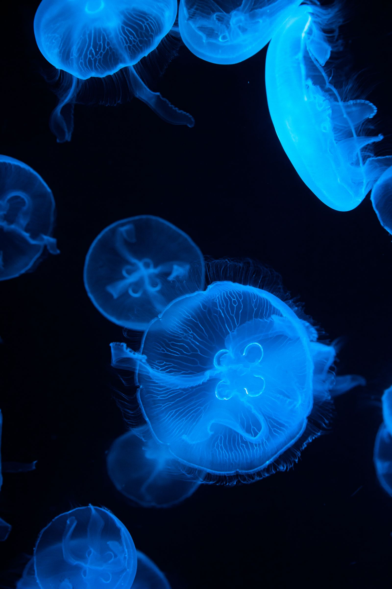

CASE 01 · MID-ATLANTIC RIDGE · 2025
The vent field that wasn't there
An institute cruise with a documentary unit embedded needed an active hydrothermal vent field: mapped for the research programme, filmed for a natural-history series, sampled for both. The charted target had been reported by a survey in the 1990s — and a chart, at 2,600 m, is a rumour until you dive on it.

The brief
Locate the charted vent field, map it, film it, sample it. Two clients, one ship: the institute needed fluid chemistry and fauna; the film unit needed black smokers on camera. Nineteen sea days, and a field that had not been visited in three decades.
Decisions
Survey before diving. A tow-yo plume survey ran before any ROV dive was committed. The charted field showed no plume; when the ROV reached it, the chimneys were extinct — cold, coated, silent.
Follow the water, not the chart. A weak particle signal ran east along the ridge axis. The dive plan was rebuilt at sea around it, and each dive was split between filming light and sampling time, so neither client consumed the other's day.
Outcome
An active field 400 m east of the charted one: eleven active chimneys mapped across 300 m, vent fluids sampled at up to 380 °C, 46 samples home in the cold chain, and a corrected chart lodged with the institute. One paper in preparation. The extinct field is now a study site in its own right — death is data too.
“She told us on day two that the vent field we'd sailed out to film was probably extinct — and showed us the data to prove it. Then she followed the plume and found the active field four hundred metres east.”